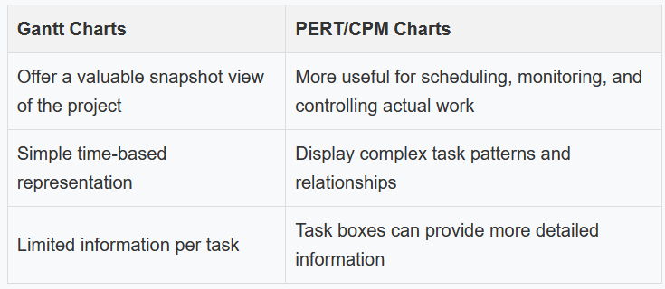

Managing Systems Projects
CC 207 A - System Analysis and Design
Project Management Overview
A successful project must be completed on time, within budget, meet requirements, and satisfy users. Project management is the process of planning, scheduling, monitoring, and reporting on the development of an information system.
Project Management is the process of planning, scheduling, monitoring, and reporting on the development of an information system.
Project management involves balancing several key factors that shape a project's success.
The Project Triangle
A project triangle shows the relationship among project cost, scope, and time. Usually one of these is fixed:
- A budget cast in stone
- An inflexible scope
- A schedule fixed by factors beyond the firm's control
A successful project must balance cost, scope, and time against a set of constraints. A change in any leg of the triangle will affect the other two legs.
Project Manager Role
The project manager is responsible for:
- Project planning - Identify all project tasks and estimate the completion time and cost of each
- Project scheduling - Create a specific timetable that shows tasks, task dependencies, and critical tasks that might delay the project
- Project monitoring - Guiding, supervising, and coordinating the project team's workload
- Project reporting - Create regular progress reports to management, users, and the project team itself
Project managers must be alert, technically competent, and highly resourceful. They also must be good communicators with strong human resource skills.
Work Breakdown Structure (WBS)
Work Breakdown Structure (WBS) is the process of identifying all project tasks and includes an estimated duration for each task.
Task is any work that has a beginning and an end and requires the use of company resources such as people, time, or money.
Tasks are basic units of work that the project manager plans, schedules, and monitors — so they should be relatively small and manageable.
Creating a Work Breakdown Structure
- List all tasks
- Put tasks in order
- Add a description
- Decide how long each task takes
- Decide which tasks must go first
Estimating Task Duration
Tasks can be measured in hours, days, or weeks. If tasks use days as the unit of measurement, they are called person-days. A person-day represents the work that one person can complete in one day.
Factors Affecting Task Duration
- Project Size - Must identify all project tasks and how much time will be needed for each task. Allow time for meetings, project reviews, training, and other factors.
- Human Resources - Assemble a development team with appropriate skills and experience. Consider turnover and job vacancies.
- Experience with Similar Projects - Develop estimates based on resources used for similar, previously developed systems.
- Constraints - Conditions, restrictions, or requirements that the system must satisfy.
Work Breakdown Structure Example
A complete WBS includes task number, task name, duration, and predecessor tasks. In Microsoft Project, you can display the same WBS information, including task number, task name, duration, and predecessor tasks.
Tasks must be clearly identified and should include estimated durations. The WBS forms the foundation for all project scheduling activities.
Task Patterns
Tasks depend on each other and must be performed in a sequence. Task patterns involve dependent tasks, multiple successor tasks, and multiple predecessor tasks.
To create a project model, task boxes are used with information including task name, task ID, task duration, start day/date, and finish day/date.
Task Box Components
- Task Name - Should be brief and descriptive
- Task ID - Can be a number or code that provides unique identification
- Task Duration - Amount of time it will take to complete a task
- Start Day/Date - The time that a task is scheduled to begin
- Finish Day/Date - The time that a task is scheduled to be completed
Types of Task Patterns
- Dependent Tasks - When tasks must be completed one after another. One task depends on the other, similar to a relay race.
"Do Task 1, then do Task 2"
- Multiple Successor Tasks - When several tasks can start at the same time. Each is called a concurrent task. Often, two or more concurrent tasks depend on a single prior task, which is called a predecessor task.
"When Task 2 is finished, start two tasks: Task 3 and Task 4"
- Multiple Predecessor Tasks - When a task requires two or more prior tasks to be completed before it can start.
"When Tasks 5 and 6 are done, start Task 7"
Critical Path Analysis
Critical Path is a series of tasks which, if delayed, would affect the completion date of the overall project. If any task on the critical path falls behind schedule, the entire project will be delayed.
To calculate the critical path, you need to review task patterns and determine start and finish dates for each task.
Critical Path Importance
The critical path identifies the sequence of tasks that control the project completion date. Project managers must pay special attention to critical path tasks to ensure the project stays on schedule.
Critical Path Calculation
To calculate the critical path:
- Review task patterns and determine the start and finish dates for each task
- Identify the longest path through the network of tasks
- This path represents the critical path
The critical path determines the overall project duration. Any delay in a critical path task will delay the entire project.
Project Management Tools
Gantt Charts
A Gantt chart is a horizontal bar chart that represents the project schedule with time on the horizontal axis and tasks arranged vertically. Developed by mechanical engineer and management consultant Henry L. Gantt almost 100 years ago, it shows planned and actual progress on a project.
PERT/CPM Charts
Program Evaluation Review Technique (PERT) was developed by the U.S. Navy to manage complex projects.
Critical Path Method (CPM) is similar to PERT, developed by private industry.
Most analysts call both a PERT Chart. It shows the project as a network diagram with tasks connected by arrows.
Gantt vs. PERT Comparison
Project Management Software
Most project managers use project management software such as:
- Microsoft Project - A full-featured program that holds the dominant share of the market, providing Gantt chart, network diagram, and calendar views
- GanttProject - A free, open source program
Project Monitoring and Control
Project monitoring and control involves guiding, supervising, and coordinating the project team's work. It's essential to maintain the schedule and address problems that arise.
- Monitoring and Control Techniques - Structured walkthrough (Organized peer review process where a group evaluates technical aspects to identify errors and enhance quality)
- Maintaining a Schedule - Most projects tune into some problems or delays
- Project Status Meetings - Regular meetings to update the team and discuss project status, issues, problems, and opportunities
- Project Status Reports - can be verbal but usually written. Often includes Gantt charts to show project status graphically
Maintaining a Schedule
Most projects run into some problems or delays. The project manager should:
- Anticipate problems
- Avoid them when possible
- Minimize their impact
- Identify potential solutions
- Select the best way to solve the problem
Risk Management
Risk Management involves identifying, analyzing, and addressing potential issues that could impact project success.
Steps in Risk Management
- Develop a risk management plan - Review the project's scope, stakeholders, budget, schedule, and other factors that might affect the project. Define project roles and responsibilities, risk management methods and procedures, categories of risks, and contingency plans.
- Identify the risks - List each risk and assess the likelihood that it could affect the project.
- Analyze the risks -
- Qualitative risk analysis evaluates each risk by estimating the probability and degree of impact
- Quantitative risk analysis understands the actual impact in terms of dollars, time, project scope, or quality
Risk Management Software
Software can help with risk management by:
- Assigning specific dates as constraints
- Aligning task dependencies
- Noting external factors that might affect a task
- Tracking progress
- Displaying tasks that are behind schedule
- Linking risks with specific tasks and projects
- Specifying probability and impact
- Assigning ownership